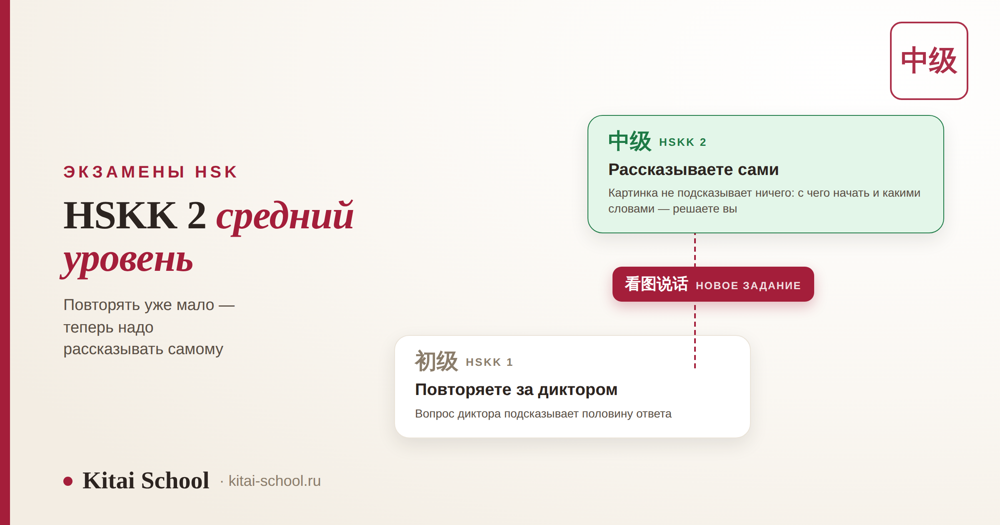
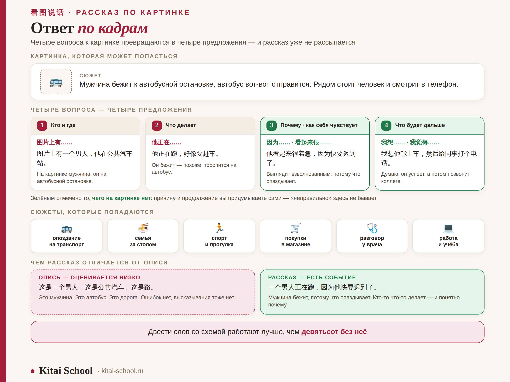
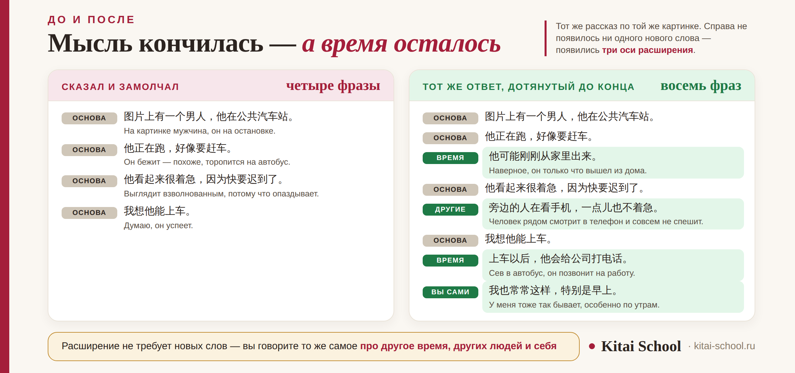

Экзамены HSK
HSKK 2: как сдать средний уровень и рассказать по картинке без пауз


Между начальным и средним уровнем устного экзамена лежит не просто плюс семьсот слов. Меняется сам жанр: там, где на 初级 достаточно было повторить услышанное и коротко ответить, на 中级 нужно говорить самому — про картинку, которую вы видите впервые, связно и до конца отведённого времени. Именно на этом переходе и спотыкаются: слова известны, а рассказ рассыпается на третьем предложении. Разберём, что конкретно меняется и что с этим делать.
HSKK 2 — это 中级, средний уровень. Главная новость — задание 看图说话, рассказ по картинке: его нет ни на начальном уровне, ни на высшем. Смотреть на картинку нужно по четырём вопросам, а не пересказывать увиденное. Речь держат не разговорные вставки, а грамматические связки: сказав 虽然, вы обязаны сказать 但是. А если мысль кончилась раньше времени — расширяйте по трём осям: время, другие люди, вы сами.
HSKK 2 — это 中级: что за уровень и кому он нужен
Устный экзамен идёт отдельно от письменного: своя регистрация, свой сертификат, три уровня вместо шести. Средний из них и есть то, что в объявлениях называют HSKK 2.
| Параметр | Что это значит |
|---|---|
| Китайское название | 中级 — средний уровень |
| Пара с письменным HSK | HSK 3–4, но это ориентир, а не требование |
| Лексика | около 900 слов |
| Части экзамена | 听后重复 · 看图说话 · 回答问题 |
| Подготовка перед говорением | около десяти минут на все задания сразу |
Кому он нужен: чаще всего это языковые программы и стажировки, где просят подтвердить устную речь отдельно, и работодатели, которым важен не сертификат HSK сам по себе, а способность говорить. Общее устройство экзамена, оценивание и речевые клише разобраны в статье про HSKK, а начальный уровень — в разборе HSKK 1. Здесь — только то, что специфично для среднего.
Что меняется после HSKK 1: главный скачок
Если смотреть на списки заданий, кажется, что изменилось одно из трёх. На деле изменился принцип.
| HSKK 1 (初级) | HSKK 2 (中级) | |
|---|---|---|
| Лексика | около 200 слов | около 900 слов |
| Второе задание | 听后回答 — короткий ответ на услышанное | 看图说话 — рассказ по картинке |
| Откуда берутся слова | подсказаны вопросом диктора | ниоткуда: вы их выбираете сами |
| Что оценивается прежде всего | понятность и произношение | связность и полнота высказывания |
| Подготовка | около семи минут | около десяти минут |
Вот в третьей строке и находится весь скачок. На начальном уровне вопрос всегда подсказывает половину ответа: услышали 你喜欢什么运动 — и слово 运动 уже у вас в руках. Картинка не подсказывает ничего: с чего начать, какими словами, в каком порядке — решаете вы. Поэтому двести слов на 初级 работают лучше, чем девятьсот на 中级 без схемы.
看图说话: задание, которого нет на других уровнях
Это главная примета среднего уровня. На начальном его нет, на высшем вместо него читают текст вслух и пересказывают услышанное. Картинок дают немного, обычно две.
Сюжеты бытовые и предсказуемые: кто-то опаздывает на автобус, семья за столом, человек в спортзале, покупки в магазине, разговор у врача. Никаких редких слов там не нужно — нужен связный рассказ на знакомой лексике.
Самая частая ошибка — перечислять предметы: «здесь мужчина, здесь стол, здесь окно». Формально это китайский, и даже без ошибок, но оценивается низко: это опись, а не высказывание. Рассказ отличается от описи одним — в нём есть событие: кто-то что-то делает и почему.

Из личного опыта
Ученица готовилась к среднему уровню и жаловалась на одно и то же: «Я смотрю на картинку и не понимаю, что про неё говорить. Ну идёт человек. Ну и что?» Слов ей хватало с запасом — она спокойно сдала письменный HSK 4.
Мы поменяли всего одну вещь. Вместо «расскажи про картинку» я стала спрашивать: кто и где, что делает, почему, что дальше. Первые дни она отвечала на мои вопросы, потом начала задавать их себе сама — и на третьей неделе перестала замечать схему: рассказ шёл сам.
С тех пор я не даю ученикам списков полезных фраз для картинок. Даю четыре вопроса — и фотографии из собственного телефона, потому что чужие экзаменационные картинки заканчиваются, а свои не заканчиваются никогда.
Четыре вопроса к картинке вместо пересказа
Схема нужна не для красоты, а для того, чтобы не думать на записи, с чего начать. Четыре вопроса дают четыре предложения — и это уже полноценный ответ.
| Вопрос | Что говорите | Чем начать |
|---|---|---|
| 1. Кто и где | участники и место одной фразой | 图片上有…… · 这是在…… |
| 2. Что делают | действие — то самое событие | 他们正在…… · 他在…… |
| 3. Почему или как себя чувствуют | причина, настроение, отношение | 因为…… · 看起来很…… |
| 4. Что будет дальше | предположение или ваш вывод | 我想他们会…… · 我觉得…… |
Обратите внимание на третий и четвёртый вопросы: их на картинке нет. Причину и продолжение вы придумываете сами, и никто не проверяет, «правильно» ли вы угадали, — проверяют, связно ли вы говорите. Это, кстати, снимает страх ошибиться: неверной догадки здесь просто не бывает.
Связки: чем грамматика держит мысль лучше клише
На среднем уровне речь оценивают за связность, и здесь работают не разговорные вставки, а обычные парные конструкции уровня HSK 3–4. Ценность у них не в красоте.
| Конструкция | Перевод | Что она делает с речью |
|---|---|---|
| 因为……所以…… | потому что… поэтому… | превращает факт в объяснение |
| 虽然……但是…… | хотя… но… | даёт вторую половину мысли бесплатно |
| 不但……而且…… | не только… но и… | добавляет предложение там, где его не было |
| 一……就…… | как только… сразу… | связывает два действия во времени |
| 除了……以外 | кроме… ещё | помогает перечислить, не спотыкаясь |
| 要是……就…… | если… то… | открывает предположение о будущем |
Механика простая: первая половина конструкции обязывает произнести вторую. Сказали 虽然 — замолчать уже невозможно, язык сам требует 但是. Именно поэтому связки надёжнее заполнителей: заполнитель даёт секунду, связка даёт целое предложение. Про сами фразы-выручалочки — восемнадцать штук с разбором — есть отдельный блок в статье про HSKK; здесь они не повторяются.
Мысль кончилась, а время осталось
Это отдельная беда среднего уровня, и она не про пустоту в голове. Человек говорит всё, что видел, укладывается в двадцать секунд — и замолкает, хотя запись идёт дальше. Спасают три оси расширения.
| Ось | Что добавляете | Пример начала |
|---|---|---|
| Время | что было до этого и что будет после | 他们可能刚刚…… · 以后他们会…… |
| Другие люди | что делают или чувствуют остальные на картинке | 旁边的人…… · 她的朋友看起来…… |
| Вы сами | ваш опыт и как это устроено там, где вы живёте | 我也常常…… · 在我们国家…… |
Каждая ось даёт одно-два предложения, а три оси закрывают остаток времени с запасом. И главное — расширение не требует новых слов: вы говорите то же самое про других людей или про себя. Именно поэтому оно работает в панике, когда словарный запас как будто испаряется.

听后重复 и 回答问题: те же названия, другая планка
Два задания перешли с начального уровня, и это сбивает с толку: кажется, что готовиться к ним не нужно. Нужно — но по-другому.
| Задание | Что изменилось | Что делать |
|---|---|---|
| 听后重复 | фразы длиннее, и удержать их в памяти целиком труднее | тренировать не понимание, а объём памяти: повторять всё длиннее, даже не переводя |
| 回答问题 | две-три фразы уже не считаются ответом | отвечать по каркасу и обязательно договаривать до конца времени |
Про 听后重复 стоит помнить главное правило начального уровня — оно не меняется: понимать фразу не обязательно, достаточно точно повторить звуки. А вот на 回答问题 средний уровень требовательнее: короткий безупречный ответ здесь проигрывает полному с парой шероховатостей. Разбор обоих заданий на начальном уровне — в статье про HSKK 1.
Как готовиться именно к среднему уровню
Общий план подготовки к устному экзамену есть в статье про HSKK. Здесь — четыре вещи, которые касаются только 中级.
| Что делать | Почему это работает |
|---|---|
| Каждый день описывать одну фотографию из телефона | материал не кончается, а схема из четырёх вопросов доводится до автоматизма |
| Ставить таймер на минуту с первого дня | минута ощущается длинной только до того, как вы её отработаете двадцать раз |
| Записывать себя и слушать паузы, а не ошибки | на записи слышно то, чего не слышно изнутри: где именно вы каждый раз встаёте |
| Отработать шесть связок до автоматизма | они должны включаться без раздумий, иначе в нужный момент не сработают |
И честная оговорка про уровень: HSK 3–4 — ориентир, а не пропуск. Устная речь почти всегда отстаёт от чтения, так что проверять готовность нужно секундомером, а не сертификатом. Что подтверждает письменный экзамен — в статье про сертификат HSK; лексика соответствующих уровней — в разборах HSK 3 и HSK 4. И отдельно: состав частей и тайминги для вашей даты сверяйте в официальном описании экзамена — формат пересматривается.
Частые вопросы (FAQ)
Чем HSKK 2 отличается от HSKK 1?
Главное отличие — не объём слов, а тип задания. На начальном уровне вы в основном работаете с услышанным: повторяете и коротко отвечаете. На среднем появляется 看图说话 — рассказ по картинке, где ничего подсказанного нет: ни фразы диктора, ни готового вопроса. Говорить приходится самому и связно. Времени на подготовку дают больше, около десяти минут вместо семи, и это как раз потому, что теперь есть что планировать.
Что такое 看图说话 и как к нему готовиться?
Это рассказ по картинке: вам дают изображение, а вы описываете, что на нём происходит. Картинок немного, обычно две. Готовиться лучше не заучиванием описаний, а одной привычкой: смотреть на любую картинку по четырём вопросам — кто и где, что делает, почему или что чувствует, что будет дальше. Четыре вопроса дают четыре предложения, и рассказ уже не рассыпается.
Достаточно ли HSK 4, чтобы сдать HSKK 2?
Соответствие HSK 3–4 — это ориентир, а не правило. Устная речь почти у всех отстаёт от чтения: человек с уверенным HSK 4 может знать все нужные слова и всё равно встать на середине рассказа. Проверять надо не уровень HSK, а способность говорить связно минуту без остановки — и лучше на записи, а не в голове.
Какие связки нужны на среднем уровне?
Не разговорные заполнители, а грамматические конструкции уровня HSK 3–4: 因为……所以, 虽然……但是, 不但……而且, 一……就……, 除了……以外, 要是……就. Они ценны не красотой, а тем, что первая половина конструкции обязывает произнести вторую: сказав 虽然, вы уже не можете замолчать. Связка вытягивает следующее предложение за собой.
Что делать, если сказал всё за двадцать секунд, а время осталось?
Это самая частая проблема среднего уровня, и решается она расширением по трём осям: время — что было раньше и что будет потом; люди — что делают или думают остальные на картинке; вы сами — бывало ли такое у вас и как это выглядит там, где вы живёте. Каждая ось даёт одно-два предложения, и минута закрывается без судорожного поиска новых слов.
Как понять, что я готов к HSKK 2?
Простая проверка: включите таймер на минуту, возьмите любую фотографию из телефона и расскажите о ней по-китайски, не останавливаясь. Запишите себя и переслушайте. Если получилось связно и без длинных пауз — вы готовы. Если встали через двадцать секунд, дело не в словах, а в схеме: её и надо отрабатывать до экзамена.
Устная речь — единственная часть языка, которую нельзя поставить чтением. Приходите на бесплатное пробное занятие: посмотрим, сколько вы говорите без остановки прямо сейчас, разберём одну картинку по схеме и соберём план подготовки под дату вашего экзамена.
Или напишите слово КАРТИНКА нашему менеджеру в Telegram — подберём формат подготовки к устному экзамену.
Дальше по теме: общее устройство устного экзамена — HSKK; начальный уровень — HSKK 1; звуки и тоны — корректировка произношения; живая речь и диалекты — как разговаривают в Китае; лексика к экзамену — подготовка к HSK 4; практика речи — групповые занятия и индивидуальные; сроки — за какое время реально выучить китайский. Все экзамены — в разделе «Экзамены HSK».
Источники
- Официальное описание экзамена HSKK: уровни, состав частей и порядок проведения.
- Практика Kitai School — подготовка к устному экзамену HSKK на среднем уровне.
- Наблюдения преподавателей за типичными ошибками в задании 看图说话.
Говорите до конца записи! 加油！